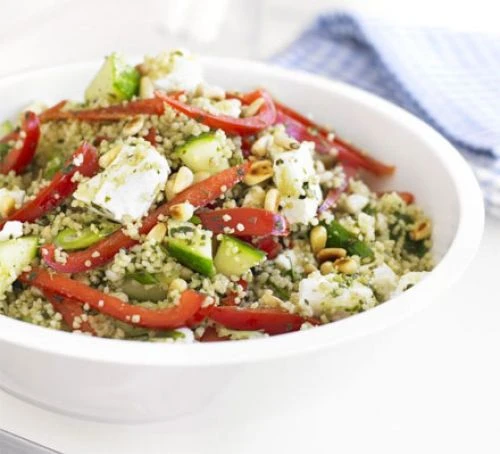

Couscous Salad

Description:
This makes a great lunchbox filler for a day out and is equally good at home from the fridge
Ingredients:
- 100g of couscous
- 200ml of hot low-salt vegetable stock
- 2 spring onions
- 1 red pepper
- 1/2 cucumber
- 50g of cubed feta cheese
- 2 tablespoons of pesto
- 2 tablespoons of pine nuts
Preparation:
- Tip the couscous into a large bowl and pour over the stock.
- Cover, then leave for 10 mins until fluffy and all the stock has been absorbed.
- Meanwhile, slice the onions and pepper, and dice the cucumber.
- Add these to the couscous, fork through the pesto, crumble in the feta, then sprinkle over pine nuts to serve.
Source
Back